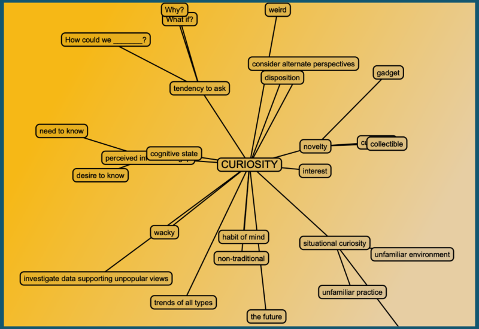

Mental Habit: Curiosity in Engineering Education

1. Description and Theoretical Framework
Definition and Importance
Curiosity is a mental habit characterized by a strong desire to explore, investigate, and learn that drives individuals to ask questions, seek new information, and develop deeper understanding. In STEM fields, curiosity acts as “the fuel of learning” that powers engagement with “fascinating phenomena, challenging problems, and creative solutions”. As a mental habit, curiosity represents a consistent pattern of thinking that can be cultivated through regular practice and appropriate environmental conditions.
Theoretical Framework: Wendy Wood’s Context-Trigger-Reward Model
According to Wendy Wood’s research, habits comprise approximately 43% of our everyday actions, though we often mistakenly perceive these as conscious choices rather than responses triggered by contextual cues. For curiosity to become habitual in engineering education, it needs:
- Context: Learning environments that normalize questioning and exploration
- Trigger: Stimuli that prompt inquisitive responses (novel problems, unexpected results)
- Reward: Satisfaction from discovering new insights or solving problems
This framework aligns with similar work by James Clear (Atomic Habits) and Charles Duhigg (The Power of Habit), all emphasizing the importance of environmental cues, consistent practice, and rewarding feedback for habit formation.
Research Support
Research has identified different elements of inquisitiveness, including “(1) an inclination to criticize, (2) an inclination to understand, (3) an inclination to achieve, (4) an inclination to share, (5) an inclination to innovate, and (6) a desire to know”. These dimensions provide a framework for understanding how curiosity manifests and can be measured in educational settings.
Some researchers distinguish between curiosity as a stable trait versus a state feature (which varies by situation). However, others argue that curiosity is not a fixed personality trait equal across contexts, suggesting it can be developed through appropriate educational interventions.
2. Engineering Education Applications
Detailed Implementation: The Anomalous Materials Testing Lab
Overview
This implementation strategy creates a structured yet open-ended laboratory experience where engineering students encounter unexpected material testing results that contradict established theory or previous understanding. The experience is specifically designed to trigger curiosity by presenting students with anomalies that cannot be explained through standard textbook knowledge.
Technical Setup and Materials
Equipment Required:
- Universal Testing Machine (UTM) capable of tension, compression, and flexural testing
- Digital Image Correlation (DIC) system for strain mapping
- Various material specimens including:
- Aluminum alloy specimens (6061-T6) with controlled microstructural variations
- Carbon fiber reinforced polymer (CFRP) samples with deliberately introduced defects
- 3D-printed polymer specimens with varying infill patterns and densities
- Data acquisition system with real-time graphing capabilities
- Optical microscopes for post-failure analysis
Pre-lab Preparation:
-
Prepare specimens with specific, controlled anomalies:
- Heat-treated aluminum specimens with varying cooling rates to create different precipitate distributions
- CFRP samples with deliberately misaligned fibers in specific regions
- 3D-printed specimens with intentional internal voids not visible from the surface
-
Create baseline data showing “expected” stress-strain behavior for each material type based on textbook properties and standard testing procedures.
Implementation Process
Phase 1: Standard Testing and Predictions (1 week)
- Students conduct literature review on mechanical properties of the selected materials
- Teams develop predictions for failure modes and mechanical properties based on established theory
- Students document their predictions including expected:
- Yield strengths
- Ultimate tensile strengths
- Elastic moduli
- Failure mechanisms and locations
Phase 2: Anomalous Testing Experience (2 weeks)
-
Students perform standardized ASTM testing procedures on their specimens
-
As testing progresses, the intentionally modified specimens produce unexpected results:
- Premature failures
- Unusual stress-strain curves
- Unexpected fracture locations
- Non-uniform strain distributions visible in DIC data
-
Critical moment: When results contradict predictions, instructors avoid providing explanations, instead asking:
- “What might explain these unexpected results?”
- “What additional information would you need to understand what’s happening?”
- “How might you modify your testing approach to investigate further?”
Phase 3: Curiosity-Driven Investigation (3 weeks)
- Teams develop investigation plans based on their specific anomalies
- Students request additional testing equipment or procedures (microscopy, chemical analysis, etc.)
- Teams design and conduct follow-up experiments, with instructor guidance limited to safety and technical support
- Students document their evolving questions and hypotheses as their investigation proceeds
Phase 4: Analysis and Communication (2 weeks)
- Teams analyze findings and develop evidence-based explanations for their anomalies
- Students prepare technical reports and presentations focusing on:
- Initial predictions and assumptions
- Observed anomalies
- Investigation process
- Proposed explanations
- Engineering implications
- Final presentations include reflection on how their curiosity evolved throughout the process
Engineering Learning Outcomes
This laboratory experience develops several critical engineering competencies:
- Materials characterization skills: Students gain hands-on experience with testing methods while learning to question standardized procedures
- Failure analysis expertise: Students develop systematic approaches to diagnosing unexpected material behavior
- Experimental design abilities: The open-ended investigation requires students to design their own testing protocols
- Technical communication skills: Students must clearly communicate complex technical findings, including both processes and conclusions
Most importantly, the experience cultivates curiosity as a professional habit by:
- Normalizing the questioning of established knowledge
- Rewarding persistent investigation rather than quick answers
- Creating a context where curiosity is the expected response to unexpected observations
- Providing the technical tools necessary to pursue engineering curiosity in a structured way
This approach has been successfully implemented in materials engineering courses at both undergraduate and graduate levels, with assessment data showing increased student confidence in designing investigations and a greater tendency to question assumptions in subsequent coursework.
3. Assessment and Measurement
Indicators of Curiosity as a Mental Habit
Observable behaviors that indicate curiosity has become habitual include:
- Spontaneous questioning beyond assignment requirements
- Independent information seeking
- Connecting ideas across different domains
- Proposing multiple hypotheses for observed phenomena
- Challenging established explanations with evidence
- Persistent refinement of understanding
- Sharing discoveries enthusiastically with peers
Assessment Methods
1. Curiosity Questionnaires Research has used “shortened version[s] of validated questionnaire[s]” containing specific questions designed to measure different aspects of inquisitiveness.
2. Behavioral Observation Track student behaviors associated with curiosity, such as question-asking frequency, voluntary information seeking, and willingness to explore multiple solutions.
3. Project Documentation Analysis Examine student engineering notebooks, design journals, or process documentation for evidence of curiosity-driven exploration, such as questions posed, information sources consulted, and alternative solutions considered.
4. Reflective Self-Assessment Have students maintain reflection journals documenting their own curiosity journey, including moments of intellectual spark, questions pursued, and insights gained.
4. Challenges and Considerations
Potential Barriers
1. Time Constraints When implementing curiosity-focused approaches, “clear lesson plan[s] and learning objectives” must be balanced with “deviation and spontaneity” to allow exploration while ensuring learning goals are met.
2. Assessment Pressures Traditional assessment systems may unintentionally discourage curiosity by rewarding quick, correct answers rather than thoughtful exploration and questioning.
3. Comfort with Uncertainty Both educators and students may feel uncomfortable with the ambiguity that often accompanies curiosity-driven learning, preferring the security of clear, predetermined answers.
4. Prior Educational Conditioning Students may come from backgrounds “where making mistakes is a negative thing” or where “sitting quietly and listening to instruction was the expected and encouraged thing to do,” making them hesitant to engage in curious exploration.
Mitigation Strategies
1. Gradual Implementation Begin with small, structured curiosity activities to build comfort before expanding to more open-ended exploration.
2. Explicit Valuing of Process Adjust assessment to reward thoughtful questioning and exploration as much as correct solutions.
3. Growth Mindset Integration Help students develop a growth mindset where they “believe that knowledge and understanding are gained through perseverance, hard work, and effort,” making them more willing to engage in curious exploration.
4. Teacher Professional Development Recognize that “curiosity is a habit that you can train for” and ensure educators have the support to develop their own curiosity habits before fostering them in students.
5. References
Carden, L., & Wood, W. (2018). Habit formation and change. Current Opinion in Behavioral Sciences, 20, 117–122.
Clear, J. (2018). Atomic Habits: An Easy & Proven Way to Build Good Habits & Break Bad Ones. Avery.
Duhigg, C. (2012). The Power of Habit: Why We Do What We Do in Life and Business. Random House.
Engineering Unleashed. (n.d.). CURIOSITY: What do we mean? Retrieved from https://engineeringunleashed.com/card/1493
Feel Good Teaching. (2023). 5 Ideas for Teaching Character Ed, Curiosity & the 4 Cs of Engineering in STEM Classes. Retrieved from https://www.feelgoodteaching.com/2023/08/5-stem-ideas-for-teaching-character-ed-curiosity-4-cs-of-engineering.html
Formation.dev. (2023). Engineering starts with curiosity. Retrieved from https://formation.dev/blog/engineering-starts-with-curiosity/
Knowles Teacher Initiative. (2023). Creating A Curious Classroom Using Science And Engineering Practices. Retrieved from https://knowlesteachers.org/kaleidoscope/creating-a-curious-classroom-using-science-and-engineering-practices
Resilient Educator. (2020). Education as Habit Formation. Retrieved from https://resilienteducator.com/instructional-design/education-as-habit-formation/
Teach Starter. (2021). 7 Tips for Teaching Curiosity in the Classroom. Retrieved from https://www.teachstarter.com/au/blog/7-tips-for-teaching-curiosity-3/
van Rijst, R. M., van der Rijst, R. M., & Jacobi, R. K. (2018). Research Education Nurtures Inquisitiveness of Professional Design and Engineering Students. In proceedings of the international conference on engineering and product design education (E&PDE, 2018).
Wood, W., Mazar, A., & Neal, D. T. (2022). Habits and Goals in Human Behavior: Separate but Interacting Systems. Perspectives on Psychological Science.